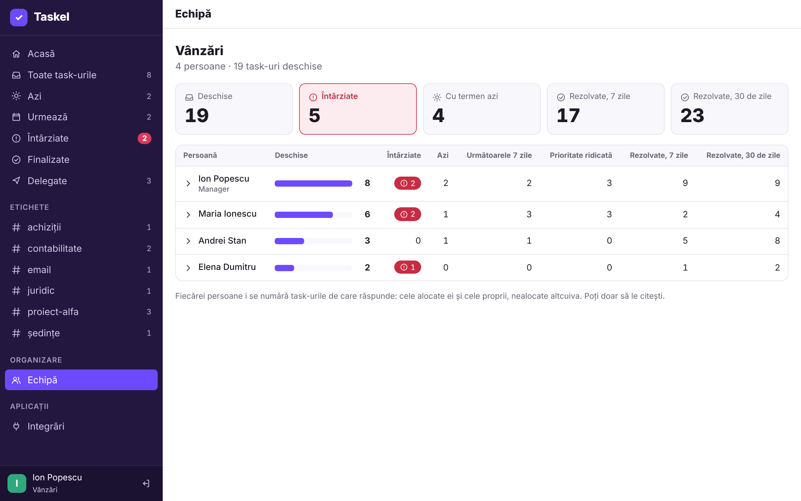
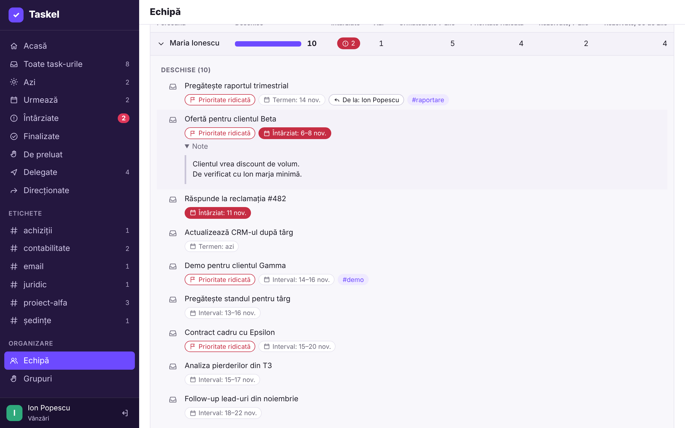
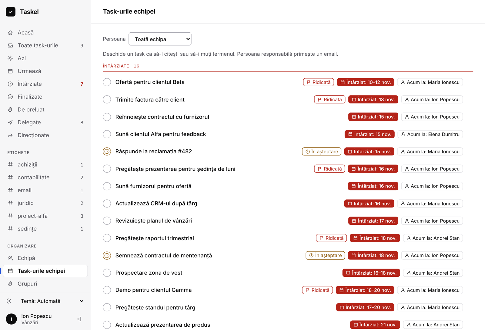
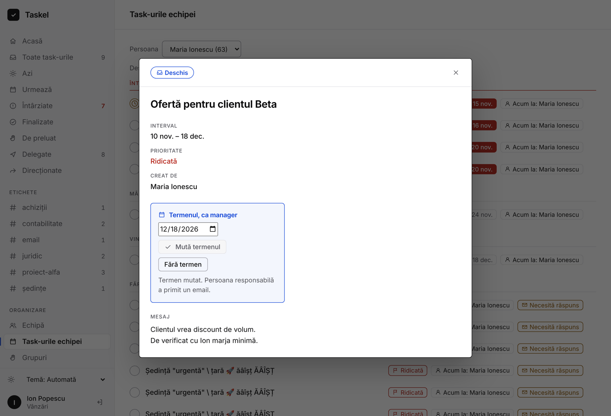
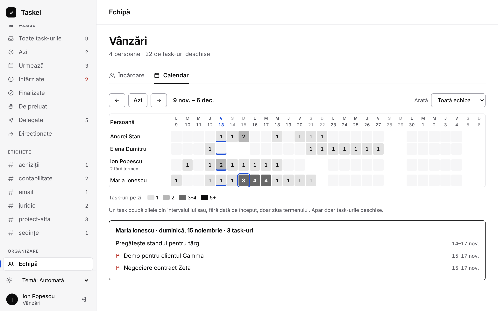
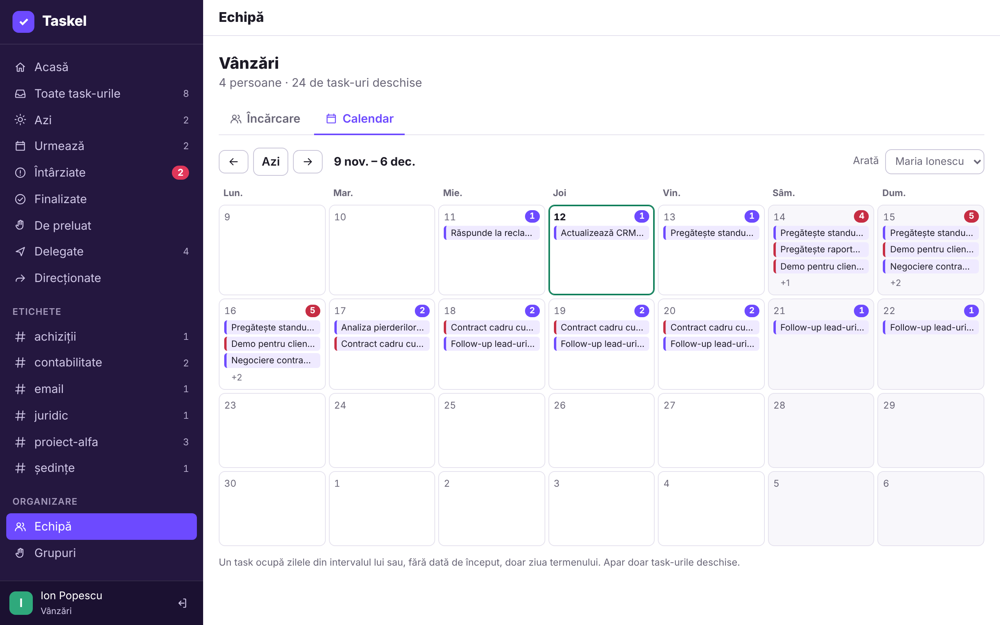
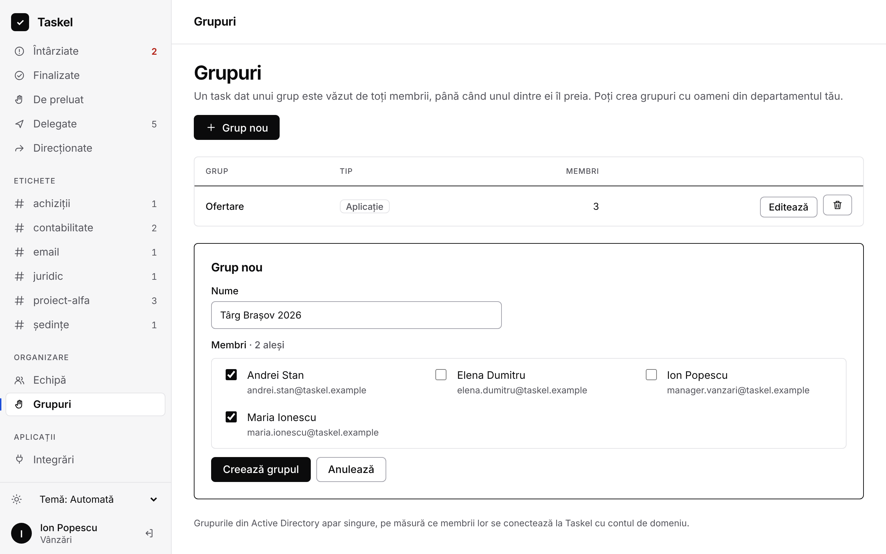

Cum urmărești încărcarea echipei, cum citești task-urile oamenilor din departament și cum organizezi grupuri de lucru.
Taskel · documentație pentru manageriEdiția noiembrie 2026
Cuprins
Rolul de manager
Un manager lucrează în Taskel ca orice utilizator și, în plus, vede cum stă cu lucrul departamentul lui și poate crea grupuri.
Acest manual descrie doar ce are în plus rolul Manager. Lucrul de zi cu zi cu task-urile (adăugare, stări, alocare, direcționare, emailuri, notificări) este descris în Manualul utilizatorului și se aplică întocmai și managerilor.
Ce poți face ca manager
Unde
Ce poți face
Echipă → Încărcare
Vezi, pentru fiecare om din departamentul tău, câte task-uri are deschise, întârziate, cu termen azi și câte a rezolvat recent.
Echipă → Calendar
Vezi cum se așază task-urile cu termen pe zile, pe patru săptămâni, pentru toată echipa sau pentru o persoană.
Task-urile unei persoane
Citești task-urile oricărui om din departament, cu mesaje, fișiere și rezolvări.
Grupuri
Creezi grupuri cu oameni din departamentul tău și le modifici pe cele create de tine.
Ce nu poți face
Nu poți modifica task-urile altora doar pentru că ești manager. Le citești; nu le poți edita, finaliza, realoca sau șterge. Excepție fac, firesc, task-urile create de tine sau alocate ție.
Nu vezi alte departamente. Vezi doar oamenii care au același departament ca tine.
Nu schimbi roluri și departamente. Asta face administratorul.
Departamentul conteazăEchipa ta este formată din conturile care au exact același departament ca al tău. Dacă nu ai un departament setat, ecranul Echipă este gol și afișează „Nu ai un departament setat”. Dacă lipsește cineva din listă, cere administratorului să îi seteze departamentul (sau să fie corectat în Active Directory ori Keycloak, dacă de acolo vine).
În meniu, managerii au o secțiune în plus, Organizare, cu Echipă și Grupuri.
Încărcarea echipei
Deschide Echipă. Fila Încărcare este afișată implicit.

Fila Încărcare: totalurile departamentului și situația pe fiecare persoană.
Totalurile departamentului
Casetele de sus însumează toată echipa: Deschise, Întârziate (cu roșu când există), Cu termen azi, Rezolvate, 7 zile și Rezolvate, 30 de zile.
Tabelul pe persoane
Coloană
Ce numără
Deschise
Task-urile nefinalizate de care răspunde persoana. Bara arată încărcarea față de cel mai încărcat coleg. Task-urile „în așteptare” sunt tot deschise.
Întârziate
Deschise, cu termenul depășit.
Azi
Deschise, cu termen azi.
Următoarele 7 zile
Deschise, cu termen în săptămâna care urmează.
Prioritate ridicată
Deschise, cu prioritate ridicată.
Rezolvate, 7 zile / 30 de zile
Finalizate în ultimele 7, respectiv 30 de zile.
Cum se atribuie un task unei persoaneO persoană este numărată pentru task-urile de care răspunde: cele alocate ei și cele proprii pe care nu le-a dat altcuiva. Un task delegat se numără la cel care îl are de făcut, nu la cel care l-a creat. Un task dat unui grup și nepreluat încă nu se numără la nimeni.
Cum folosești tabelul
Înainte de a aloca ceva urgent, uită-te la Deschise și Următoarele 7 zile ca să alegi pe cineva mai liber.
O valoare mare la Întârziate este semnalul să deschizi task-urile persoanei și să vezi ce le blochează; caută task-urile „în așteptare” și motivele lor.
Rezolvate îți arată ritmul, nu doar stocul.
Task-urile unei persoane
În tabelul de încărcare, apasă pe numele unei persoane. Sub tabel apar task-urile ei deschise și Ultimele finalizate.

Task-urile unui om din echipă, afișate sub tabelul de încărcare.
Un clic pe un task îl deschide în aceeași fereastră ca la task-urile tale, dar doar pentru citire, cu o singură excepție: termenul, pe care îl poți muta (vezi „Task-urile echipei”): vezi titlul, mesajul, termenul, starea, motivul așteptării sau mesajul de rezolvare, fișierele (le poți descărca) și traseul. Nu apar butoanele de stare, de editare sau de ștergere.
SfatDacă vrei să intervii pe un task al unui coleg, discută cu el sau cu creatorul task-ului: ei îl pot realoca, direcționa sau finaliza. Pentru lucrările pe care vrei să le controlezi tu, creează tu task-ul și alocă-l: rămâne la tine în Delegate, cu toate drepturile.
Task-urile echipei
Din meniul Organizare → Task-urile echipei vezi toate task-urile oamenilor din departament: cele deschise și cele finalizate în ultimele două săptămâni. Sunt grupate pe zile: Întârziate, apoi fiecare zi cu task-uri, Fără termen și, la final, cele finalizate recent.
Cu Persoana alegi un singur om; în paranteză e numărul task-urilor lui deschise.
Administratorul alege și Departamentul.

Task-urile echipei, pe zile, cu filtrul pe persoană.
Mutarea unui termen
Deschide task-ul (din această listă sau din Echipă). Caseta Termenul, ca manager îți permite să alegi o dată nouă și să apeși Mută termenul, sau să scoți termenul cu Fără termen.
Se schimbă doar termenul; restul task-ului rămâne al persoanei.
Persoana responsabilă primește un email („Termen schimbat”), iar schimbarea rămâne în conversația task-ului.
Termenul nu poate fi înaintea datei de început a task-ului, iar un task finalizat nu se mai mută.

Un task al unui coleg, cu termenul mutat de manager.
Calendarul echipei
Fila Calendar arată task-urile deschise și cu termen, pe zile, câte patru săptămâni odată.

Calendarul echipei: câte task-uri are fiecare persoană în fiecare zi.
Vederea pe toată echipa
Fiecare rând este o persoană, fiecare coloană o zi. Cifra din celulă este numărul de task-uri deschise care cad în acea zi; cu cât culoarea e mai intensă, cu atât ziua e mai încărcată.
Un task cu interval (Început – Termen) se numără în fiecare zi a intervalului. Un task doar cu termen se numără în ziua termenului.
Sub numele persoanei poate apărea „N fără termen”: task-uri deschise care nu au dată și deci nu apar în calendar.
Zilele de weekend și ziua de azi sunt marcate distinct.
Cu săgețile din stânga sus te muți cu patru săptămâni înainte sau înapoi.
Un clic pe o celulă afișează dedesubt task-urile persoanei din acea zi.
Calendarul unei persoane
Din lista Arată alege o persoană (sau apasă pe numele ei în tabel). Calendarul devine unul clasic, cu zilele pe săptămâni, iar în fiecare zi apar primele trei task-uri și numărul celor rămase. Alege Toată echipa ca să revii.

Calendarul unei singure persoane.
PlanificareCa să apară în calendar, un task trebuie să aibă termen. Încurajează echipa să pună cel puțin termenul, iar pentru lucrările de mai multe zile și data de început: abia atunci calendarul arată încărcarea reală.
Grupuri
Un grup este o listă de persoane căreia i se poate da un task. Task-ul apare la toți membrii în De preluat, iar cel care îl preia devine responsabil. Grupurile sunt potrivite pentru lucrări pe care le poate face oricine dintr-o echipă: oferte, solicitări de suport, aprobări.

Ecranul Grupuri, cu lista grupurilor și formularul unui grup nou.
Tipuri de grupuri
Tip
De unde vine
Ce poți face cu el
Aplicație
Creat în Taskel de un manager sau de un administrator.
Îl modifici dacă l-ai creat tu; altfel doar îi vezi membrii.
Active Directory
Grup din domeniul firmei, adus automat când membrii se conectează.
Doar îi vezi membrii. Componența se schimbă în domeniu.
Keycloak
Grup din Keycloak, adus automat la conectare.
Doar îi vezi membrii. Componența se schimbă în Keycloak.
Grupurile din domeniu și KeycloakLa aceste grupuri apar ca membri doar persoanele care s-au conectat cel puțin o dată la Taskel. O schimbare de componență se vede la următoarea conectare a persoanei respective.
Crearea unui grup
Deschide Grupuri și apasă Grup nou.
Scrie numele grupului (cel mult 100 de caractere; nu pot exista două grupuri cu același nume).
Bifează membrii. Ca manager, poți alege doar persoane din departamentul tău.
Apasă Creează grupul.
Grupul poate fi folosit imediat de oricine din aplicație, la Alocat către și la direcționare.
Modificarea și ștergerea
Apasă Editează în dreptul unui grup creat de tine ca să îi schimbi numele sau membrii.
Membrii din alte departamente adăugați de un administrator rămân în grup când îl modifici; nu poți însă adăuga tu alții din afara departamentului.
Butonul cu coșul șterge grupul. Task-urile care așteptau la grup nu se șterg: se întorc la cel care le-a creat.
Înainte de a scoate un om din grupTask-urile pe care le-a preluat deja rămân la el. Task-urile nepreluate ale grupului nu le mai vede.
Bune practici pentru manageri
Când aloci direct și când dai unui grup
Alocă unei persoane când…
Dă unui grup când…
știi cine trebuie să facă lucrarea;
o poate face oricine din echipă;
ai verificat încărcarea și persoana are loc;
vrei ca primul om liber să o ia;
vrei un singur responsabil de la început.
solicitările vin continuu și se împart de la sine.
Urmărirea lucrărilor date
Vederea Delegate arată tot ce ai creat și ai dat altora, cu starea curentă. Un task de grup rămâne aici „de preluat” până îl ia cineva.
Caseta Delegate de mine de pe Acasă îți arată aceleași task-uri fără să schimbi vederea.
Un task „în așteptare” are întotdeauna un motiv scris. Citește-l înainte de a întreba omul: de multe ori blocajul este la altcineva și îl poți debloca tu.
O rutină săptămânală de 10 minute
Încărcare: sortează din ochi după Întârziate; deschide task-urile celor cu cele mai multe.
Calendar: uită-te la următoarele două săptămâni; mută sau realocă task-urile tale delegate din zilele supraîncărcate.
Delegate: verifică task-urile de grup nepreluate de mai multe zile.
Întrebări frecvente
Nu văd secțiunea Organizare în meniu.
Contul tău nu are rolul Manager. Rolul îl dă administratorul sau, la conturile de domeniu și Keycloak, apartenența la grupul sau rolul stabilit acolo.
Ecranul Echipă este gol.
Nu ai departament setat, sau nimeni altcineva nu are același departament. Verifică împreună cu administratorul cum este scris departamentul (diferențele de majuscule nu contează, dar „Vânzări” și „Vanzari” sunt departamente diferite).
Un coleg nou nu apare în echipă.
Trebuie să aibă cont în Taskel (la conturile de domeniu, să se fi conectat o dată) și același departament ca tine.
De ce cifrele din Încărcare nu se potrivesc cu ce văd eu în Delegate?
Încărcarea numără toate task-urile de care răspunde persoana, inclusiv cele create de ea sau primite de la alții, nu doar pe cele date de tine.
Pot vedea task-urile unui om din alt departament?
Nu, în afara celor în care ești implicat direct (create de tine, alocate ție sau direcționate de tine). Administratorii pot vedea orice departament.
Am două departamente în subordine.
Un cont are un singur departament. Soluția obișnuită este ca administratorul să dea aceluiași nume de departament ambelor echipe, sau să îți urmărească el, cu rolul de administrator, al doilea departament.